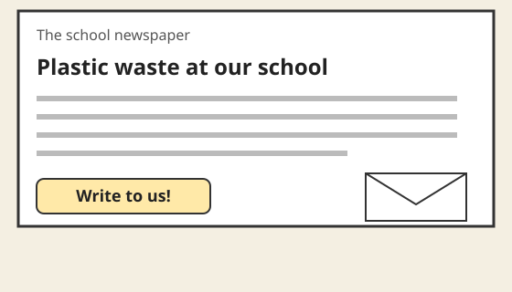
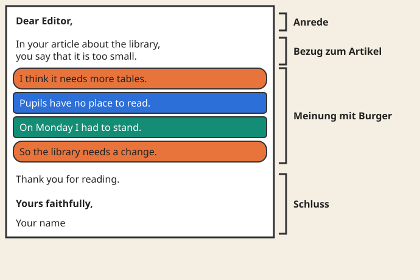

Leserbrief: auf einen Artikel antworten
Mit einem KI-Tutor lernen
Ein KI-Tutor erklärt dir diese Seite und hilft dir bei den Aufgaben. Wähl deinen Assistenten:
Mit Claude öffnen Mit ChatGPT öffnen Mit Mistral Vibe öffnen
Du nutzt dein eigenes Konto beim Anbieter. Der Assistent ist kein Angebot von lernapps.net: lernapps liefert nur Inhalte und Aufgaben. Die Wahl gilt für alle Seiten, nur auf diesem Gerät.
Die Schülerzeitung bittet um Post

© CC-BY-4.0Ein Ausschnitt aus der Schülerzeitung.
Der Artikel endet mit der Bitte, der Zeitung zu schreiben.
Aufgabe
Lösung
Ein Artikel, den die Zeitung über ihre Leser schreibt
Beim Leserbrief schreiben die Leser.
Ein Brief der Zeitung an alle Leser
Beim Leserbrief geht die Post an die Zeitung.
Ein Brief an die Zeitung, der auf einen Artikel antwortet richtige Antwort
Die Leser schreiben der Zeitung ihre Meinung.
Ein Leserbrief ist die Antwort eines Lesers.
Das kannst du danach: Du schreibst einen Brief, der auf einen Artikel antwortet, mit Anrede, Bezug, Meinung und Schluss.
Ellies Brief an die Schülerzeitung
| Englisch | Deutsch |
|---|---|
| editor | Redakteur, Redakteurin |
| article | Artikel |
| water station | Trinkwasserstelle |
| fill | füllen |
| throw away | wegwerfen |
Die Zahlen sind die Zeilen.
1 Dear Editor,
2 In your article about plastic waste, you ask what our school can do. I read it carefully, and I would like to answer.
3 I think the school should buy a water station for the canteen.
4 My reason is that pupils can fill their bottles again and again, so nobody has to buy a new one.
5 For example, I buy a plastic bottle every morning, so I throw away five bottles every week.
6 So a water station is the best way to make less plastic waste at our school, and every pupil can use it every day.
7 Some pupils say it is too expensive. However, a pupil who fills one bottle every day saves a lot of money. Moreover, a water station is good for the environment.
8 Thank you for reading my letter. I hope the school will try the idea for one term.
9 Yours faithfully,
10 Ellie Parker
Ein Leserbrief hat vier Teile

© CC-BY-4.0Die vier Teile eines Leserbriefs.
Merke
1. Anrede: Du kennst den Namen nicht? Dann schreibst du Dear Editor, oder Dear Sir or Madam,. Kennst du ihn, schreibst du Dear Mr Hill,. Nie Dear Mister.
2. Bezug: Sage, auf welchen Artikel du antwortest: In your article about …, you say that …
3. Meinung: Ein Burger mit Opinion, Reason, Example und Opinion. Grund: because oder My reason is that …. However fügt eine Gegenseite an, moreover ergänzt.
4. Schluss: Ein Dank, dann Yours faithfully, nach einer Anrede ohne Namen, und Yours sincerely, nach einer Anrede mit Namen. Dann steht dein Name.
Teile finden, Sätze bauen, Brief ordnen
Aufgabe
Lösung
Die Schule soll mehr Mülleimer aufstellen
Das steht im Artikel, nicht in Ellies Brief.
Die Schule soll eine Trinkwasserstelle kaufen richtige Antwort
Das steht in Zeile 3.
Die Schule soll keine Flaschen mehr erlauben
Davon steht nichts im Brief.
Ellies Meinung steht in Zeile 3.
Aufgabe
Lösung
Zeile 2
Hier steht der Bezug zum Artikel.
Zeile 3
Hier steht die Meinung.
Zeile 5 richtige Antwort
Hier schreibt Ellie, was sie selbst jede Woche tut.
Zeile 8
Hier steht der Schluss.
Ein Beispiel ist etwas, das wirklich passiert.
Aufgabe
Lösung
Richtige Antwort: Dear Sir or Madam, – Anrede; I am writing about your article on the new sports hall. – Bezug; I think we should have longer breaks. – Meinung; Thank you for your time. Yours faithfully, – Schluss
Anrede, Bezug, Meinung und Schluss.
Aufgabe
Schreibe auf Englisch. Satz 1: In Ihrem Artikel über Klassenfahrten sagen Sie, dass sie zu teuer sind. Satz 2: Ich denke, die Schule sollte mehr Bücher kaufen. Satz 3: Mein Grund ist, dass die Kinder einen ruhigen Ort brauchen. Ergänze, was für einen ganzen Satz fehlt.
- in your article · school trips · you · say · too expensive
- I · think · school · should · buy · more · books
- my reason · pupils · need · quiet place
Lösung
- In your article about school trips, you say that they are too expensive. (auch richtig: In your article about school trips, you say they are too expensive.; In your article on school trips, you say that they are too expensive.; In your article on school trips, you say they are too expensive.)
- I think that the school should buy more books. (auch richtig: I think the school should buy more books.)
- My reason is that pupils need a quiet place. (auch richtig: My reason is pupils need a quiet place.)
Aufgabe
Wähle das Verbindungswort, das zum deutschen Satz passt.
- Manche sagen, der Bus sei voll. Aber ich finde ihn praktisch. → Some pupils say the bus is full. …, I find it useful.
- Die Pause ist zu kurz. Deshalb sind viele müde. → The break is too short. …, many pupils are tired.
- Der Club ist kostenlos. Außerdem ist er in der Schule. → The club is free. …, it is at school.
Lösung
- Some pupils say the bus is full. However, I find it useful.
- The break is too short. Therefore, many pupils are tired.
- The club is free. Moreover, it is at school.
Gegensatz, Folge, Ergänzung.
Aufgabe
Lösung
Richtige Antwort: 1. Dear Editor,, 2. In your article about school clubs, you ask for new ideas., 3. I think we should start a chess club because it is quiet and fun., 4. I hope you will think about my idea., 5. Yours faithfully,
Anrede, Bezug, Meinung, Schluss.
Aufgabe
Hör zu und schreibe, was du hörst.
- KI
- KI
- KI
Lösung
- I am writing about your last article.
- Please send your letters to the editor by Friday.
- Many pupils answered our question.
Dein eigener Leserbrief
Aufgabe
Hör zu, sprich nach und nimm dich auf. Vergleiche dann mit dem Original.
Tipp
Hör zu. Sprich dann langsam nach.
- Let me tell you my opinion.KI
- In my view, the school should do something.KI
- I look forward to your answer.KI
Zum Aufnehmen braucht diese Aufgabe JavaScript. Die Beispiele kannst du auch ohne anhören.
Lösung
- Let me tell you my opinion.
- In my view, the school should do something.
- I look forward to your answer.
Offene Aufgabe
Stell dir vor, die Schülerzeitung hat einen Artikel über das Schulessen gedruckt. Schreibe einen Leserbrief in acht bis zehn Sätzen (ohne Anrede und Schlussformel) mit Bezug zum Artikel, einem Burger, einem Satz mit however oder moreover und einem Dank.
Tipp
Die App bewertet nicht. Prüfe deinen Text anhand der Punkte.
Eine gute Antwort enthält:
Lösung
Dear Editor,
In your article about school lunches, you say that the canteen needs more choice. I agree with you. I think the canteen should have a fruit bar. My reason is that fruit is healthy and many pupils are hungry after lunch. For example, last week a lot of pupils bought sweets at the shop because they were still hungry. So a fruit bar would help. However, some pupils say that fruit is too expensive. Moreover, the school can buy it in large boxes. Thank you for reading my letter.
Yours faithfully, Amir
Rückblick auf das Kapitel
In diesem Kapitel hast du vier Dinge gelernt:
- Du verbindest Gedanken mit however, therefore, moreover und on the one hand … on the other hand.
- Du sprichst über Müll und Recycling und machst Vorschläge mit should.
- Du sagst, wann und von wem etwas erfunden wurde (was invented by …).
- Du schreibst einen Leserbrief, der sich auf einen Artikel bezieht.
Im nächsten Kapitel wägst du Pro und Contra ab.
Fehler gefunden oder eine Idee für diese App?